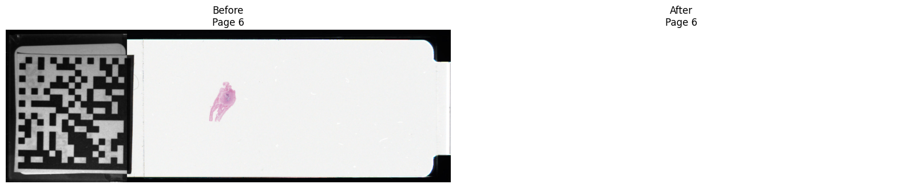

def report_detection(
path: str | Path,
) -> None:
"""
Print a diagnostic summary of label-page detection.
Parameters
----------
path
Path to the slide to inspect.
Returns
-------
None
See Also
--------
`slide_report`
`find_pyramid_pages`
`find_associated_pages`
`find_label_page`
"""
info = inspect_slide(path)
pyramid = find_pyramid_pages(info)
associated = find_associated_pages(info)
label = find_label_page(info)
print("Format:", info.format.value)
print(
"Pyramid:",
[page.index for page in pyramid],
)
print(
"Associated:",
[page.index for page in associated],
)
print("Selected label:", label.index)
print(
"Detection method:",
label_detection_method(info, label),
)
for page in associated:
print(
f"Page {page.index}: "
f"{page.width}×{page.height}, "
f"ratio={page.aspect_ratio:.3f}, "
f"subfiletype={page.new_subfile_type}, "
f"photometric={page.photometric}, "
f"compression={page.compression}, "
f"segments={len(page.offsets)}"
)core
Detection and removal of label images from TIFF-based digital pathology slides.
Overview
Exceptions
Core exception types used by the public API.
/home/runner/work/popidd-sveil/popidd-sveil/.venv/lib/python3.12/site-packages/fastcore/docscrape.py:259: UserWarning: Unknown section See Also
else: warn(msg)OperationMode
def OperationMode(
args:VAR_POSITIONAL, kwds:VAR_KEYWORD
):
Specify how an anonymised slide is written.
ReplacementImageError
def ReplacementImageError(
args:VAR_POSITIONAL, kwargs:VAR_KEYWORD
):
Raised when a replacement image cannot be created or validated.
UnsupportedLabelEncodingError
def UnsupportedLabelEncodingError(
args:VAR_POSITIONAL, kwargs:VAR_KEYWORD
):
Raised when a label page uses an unsupported storage layout.
OutputExistsError
def OutputExistsError(
args:VAR_POSITIONAL, kwargs:VAR_KEYWORD
):
Raised when an output path exists and overwriting is disabled.
UnsafeSegmentError
def UnsafeSegmentError(
args:VAR_POSITIONAL, kwargs:VAR_KEYWORD
):
Raised when an image segment cannot be modified safely.
AmbiguousLabelError
def AmbiguousLabelError(
args:VAR_POSITIONAL, kwargs:VAR_KEYWORD
):
Raised when multiple plausible label pages are detected.
LabelNotFoundError
def LabelNotFoundError(
args:VAR_POSITIONAL, kwargs:VAR_KEYWORD
):
Raised when no candidate label or macro page can be detected.
UnsupportedSlideError
def UnsupportedSlideError(
args:VAR_POSITIONAL, kwargs:VAR_KEYWORD
):
Raised when a slide format or file extension is unsupported.
SveilError
def SveilError(
args:VAR_POSITIONAL, kwargs:VAR_KEYWORD
):
Base exception for errors raised by popidd_sveil.
Data Models
Lightweight dataclasses representing slide and page metadata, and anonymisation results.
ImageReplacement
def ImageReplacement(
page_index:int, offset:int, allocated_bytes:int, encoded_image:bytes
)->None:
Describe an encoded image prepared for binary replacement.
AnonymizationResult
def AnonymizationResult(
source_path:Path, output_path:Path, format:SlideFormat, mode:OperationMode, label_page:int, detection_method:str,
original_bytes:int, replacement_bytes:int
)->None:
Summarise a completed label-removal operation.
LabelLocation
def LabelLocation(
page_index:int, detection_method:str, offsets:tuple[int, ...], byte_counts:tuple[int, ...]
)->None:
Describe the storage location of a detected label page.
SlideInfo
def SlideInfo(
path:Path, format:SlideFormat, byte_order:str, is_bigtiff:bool, pages:tuple[PageInfo, ...]
)->None:
Store structural metadata for a TIFF-based pathology slide.
PageInfo
def PageInfo(
index:int, shape:tuple[int, ...], height:int, width:int, aspect_ratio:float, description:str,
new_subfile_type:int | None, compression:str, photometric:str, samples_per_pixel:int,
bits_per_sample:tuple[int, ...], magnification:float | None, offsets:tuple[int, ...],
byte_counts:tuple[int, ...]
)->None:
Store structural metadata for a TIFF page.
SlideFormat
def SlideFormat(
args:VAR_POSITIONAL, kwds:VAR_KEYWORD
):
Identify the supported TIFF-based slide formats.
Slide Inspection
Utilities to inspect TIFF slides and obtain structured metadata via inspect_slide.
inspect_slide
def inspect_slide(
path:str | Path, # Path to an SVS, NDPI, TIF, or TIFF slide.
)->SlideInfo: # Structural metadata for the slide and its TIFF pages.
Inspect a TIFF-based slide without decoding its full image pyramid.
slide_report
def slide_report(
path:str | Path, # Path to the slide to inspect.
)->str: # Multiline report describing the slide and each TIFF page.
Create a human-readable report of slide and page metadata.
aspect_ratios_match
def aspect_ratios_match(
first:float, # First aspect ratio.
second:float, # Second aspect ratio.
relative_tolerance:float=0.01, # Maximum relative difference accepted as a match.
)->bool: # `True` when the ratios match and are both positive.
Test whether two aspect ratios agree within a relative tolerance.
group_pages_by_aspect_ratio
def group_pages_by_aspect_ratio(
pages:Sequence[PageInfo], # Page metadata to group.
relative_tolerance:float=0.01, # Maximum relative difference between matching aspect ratios.
)->tuple[tuple[PageInfo, ...], ...]: # Groups of pages with similar aspect ratios.
Group TIFF pages with similar aspect ratios.
Pages are considered in descending order of pixel area. Each page is assigned to the first group whose reference aspect ratio matches according to aspect_ratios_match.
Pyramid Detection
Helpers to group pages by aspect ratio and identify the TIFF pyramid pages.
find_pyramid_pages
def find_pyramid_pages(
info:SlideInfo, # Slide metadata returned by `inspect_slide`.
relative_tolerance:float=0.01, # Maximum relative difference between matching aspect ratios.
)->tuple[PageInfo, ...]: # Pages classified as pyramid levels.
Identify the dominant aspect-ratio group as the image pyramid.
The group containing the largest number of pages is selected. Pixel area is used to resolve ties between groups of equal size.
find_associated_pages
def find_associated_pages(
info:SlideInfo, # Slide metadata returned by `inspect_slide`.
relative_tolerance:float=0.01, # Maximum relative difference used for pyramid grouping.
)->tuple[PageInfo, ...]: # Pages outside the dominant pyramid group.
Return pages that do not belong to the detected image pyramid.
Label Detection
Format-specific heuristics to detect label/macro pages (find_label_page delegates to these helpers).
is_colour_page
def is_colour_page(
page:PageInfo, # Page metadata to inspect.
)->bool: # `True` when the page has at least three samples per pixel and
uses a recognised colour photometric interpretation.
Determine whether a page represents a recognised colour image.
find_ndpi_label_page
def find_ndpi_label_page(
info:SlideInfo, # NDPI slide metadata returned by `inspect_slide`.
relative_tolerance:float=0.01, # Maximum relative difference used for pyramid grouping.
)->PageInfo: # Metadata for the detected label or macro page.
Detect the colour label or macro page in an NDPI slide.
The detector excludes pages belonging to the dominant image pyramid and selects the unique remaining colour page.
find_svs_label_page
def find_svs_label_page(
info:SlideInfo, # SVS slide metadata returned by `inspect_slide`.
relative_tolerance:float=0.01, # Maximum relative difference used for pyramid grouping.
)->PageInfo: # Metadata for the detected label page.
Detect a probable label page in an SVS slide.
Detection prioritises a colour associated page with TIFF NewSubfileType 1, followed by an explicit label description and finally a unique eligible colour page outside the image pyramid.
find_tiff_label_page
def find_tiff_label_page(
info:SlideInfo, # TIFF slide metadata returned by `inspect_slide`.
relative_tolerance:float=0.01, # Maximum relative difference used for pyramid grouping.
)->PageInfo: # Metadata for the detected label page.
Detect a probable label page in a generic TIFF slide.
Detection first considers pages explicitly described as labels. If none are found, the unique colour page outside the dominant image pyramid is selected.
find_label_page
def find_label_page(
info:SlideInfo, # Slide metadata returned by `inspect_slide`.
relative_tolerance:float=0.01, # Maximum relative difference used for aspect-ratio grouping.
)->PageInfo: # Metadata for the detected label or macro page.
Detect the label or macro page using format-specific rules.
describe_label_candidate
def describe_label_candidate(
path:str | Path, # Path to the slide to inspect.
relative_tolerance:float=0.01, # Maximum relative difference used for aspect-ratio grouping.
)->str: # Human-readable description of the selected page.
Describe the label page selected for a slide.
validate_label_page_for_replacement
def validate_label_page_for_replacement(
page:PageInfo, # Candidate label page to validate.
)->None:
Validate that a label page supports in-place JPEG replacement.
The current replacement implementation requires a colour page stored as a single JPEG or old-style JPEG segment.
Replacement Generation
Helpers to validate label encoding and to produce an appropriately-sized blank JPEG replacement.
create_blank_jpeg
def create_blank_jpeg(
width:int, # Image width in pixels.
height:int, # Image height in pixels.
maximum_bytes:int, # Maximum permitted size of the encoded JPEG.
colour:tuple[int, int, int]=(255, 255, 255), # RGB colour used to fill the replacement image.
)->bytes: # Encoded JPEG data no larger than `maximum_bytes`.
Encode a blank RGB JPEG within a fixed byte allocation.
prepare_replacement
def prepare_replacement(
page:PageInfo, # Detected label page returned by `find_label_page`.
)->ImageReplacement: # Encoded blank image and its target storage location.
Prepare a blank encoded replacement for a label page.
validate_replacement
def validate_replacement(
path:str | Path, # Path to the slide that will be modified.
replacement:ImageReplacement, # Prepared replacement returned by `prepare_replacement`.
)->None:
Validate a prepared replacement against its target slide.
apply_replacement
def apply_replacement(
path:str | Path, # Path to the slide to modify.
replacement:ImageReplacement, # Prepared replacement returned by `prepare_replacement`.
)->None:
Overwrite a label segment with an encoded replacement image.
Remaining bytes in the original allocation are overwritten with zeros after the replacement JPEG.
File Modification
Functions that perform in-place binary updates safely and with padding.
prepare_output_path
def prepare_output_path(
source:str | Path, # Path to the source slide.
mode:OperationMode | str=<OperationMode.COPY: 'copy'>, # Whether to create a copy or modify the source in place.
output:str | Path | None=None, # Explicit destination used in copy mode. If omitted,
`default_output_path` determines the destination.
overwrite:bool=False, # Whether an existing destination may be replaced.
)->Path: # Path that should be modified or created.
Validate and resolve the path to a processed slide.
default_output_path
def default_output_path(
path:str | Path, # Source slide path.
)->Path: # Default output path in the source directory.
Construct the default path for an anonymised copy.
The returned filename inserts ".sveil" before the original file extension.
validate_processed_slide
def validate_processed_slide(
path:str | Path, # Path to the processed slide.
page_index:int, # Zero-based index of the replaced page.
)->None:
Verify that a processed TIFF page remains decodable.
validate_blank_page
def validate_blank_page(
path:str | Path, # Path to the processed slide.
page_index:int, # Zero-based index of the replaced page.
minimum_mean:float=250.0, # Minimum permitted mean pixel value.
)->None:
Verify that a processed page decodes as a near-white image.
label_detection_method
def label_detection_method(
info:SlideInfo, # Metadata for the inspected slide.
page:PageInfo, # Label page selected by `find_label_page`.
)->str: # Stable identifier for the detection rule.
Describe the rule that selected a label page.
remove_label
def remove_label(
path:str | Path, # Path to the source slide.
mode:OperationMode | str=<OperationMode.COPY: 'copy'>, # Whether to create an anonymised copy or modify the source.
output:str | Path | None=None, # Explicit destination in copy mode. If omitted,
`default_output_path` determines the destination.
overwrite:bool=False, # Whether an existing destination may be replaced.
relative_tolerance:float=0.01, # Maximum relative difference used for aspect-ratio grouping.
)->AnonymizationResult: # Summary of the completed operation.
Replace the detected label page with a blank image.
Copy mode preserves the source slide and writes an anonymised copy. In-place mode modifies the source slide directly.
Examples
print(slide_report(image_path))Path: ../input/pid.ndpi
Format: ndpi
Byte order: <
BigTIFF: False
Pages: 8
Page 0
Shape: (39168, 30720, 3)
Dimensions: 30720 × 39168
Aspect ratio: 0.784314
Description: ''
NewSubfileType: None
Magnification: 40.0
Compression: JPEG
Photometric: YCBCR
Samples per pixel: 3
Bits per sample: (8,)
Segments: 39168
Encoded bytes: 156706015
Page 1
Shape: (19584, 15360, 3)
Dimensions: 15360 × 19584
Aspect ratio: 0.784314
Description: ''
NewSubfileType: None
Magnification: 20.0
Compression: JPEG
Photometric: YCBCR
Samples per pixel: 3
Bits per sample: (8,)
Segments: 19584
Encoded bytes: 34674486
Page 2
Shape: (9792, 7680, 3)
Dimensions: 7680 × 9792
Aspect ratio: 0.784314
Description: ''
NewSubfileType: None
Magnification: 10.0
Compression: JPEG
Photometric: YCBCR
Samples per pixel: 3
Bits per sample: (8,)
Segments: 9792
Encoded bytes: 8267640
Page 3
Shape: (4896, 3840, 3)
Dimensions: 3840 × 4896
Aspect ratio: 0.784314
Description: ''
NewSubfileType: None
Magnification: 5.0
Compression: JPEG
Photometric: YCBCR
Samples per pixel: 3
Bits per sample: (8,)
Segments: 4896
Encoded bytes: 2179197
Page 4
Shape: (2448, 1920, 3)
Dimensions: 1920 × 2448
Aspect ratio: 0.784314
Description: ''
NewSubfileType: None
Magnification: 2.5
Compression: JPEG
Photometric: YCBCR
Samples per pixel: 3
Bits per sample: (8,)
Segments: 2448
Encoded bytes: 583742
Page 5
Shape: (1224, 960, 3)
Dimensions: 960 × 1224
Aspect ratio: 0.784314
Description: ''
NewSubfileType: None
Magnification: 1.25
Compression: JPEG
Photometric: YCBCR
Samples per pixel: 3
Bits per sample: (8,)
Segments: 1224
Encoded bytes: 149445
Page 6
Shape: (648, 1890, 3)
Dimensions: 1890 × 648
Aspect ratio: 2.916667
Description: ''
NewSubfileType: None
Magnification: -1.0
Compression: JPEG
Photometric: YCBCR
Samples per pixel: 3
Bits per sample: (8,)
Segments: 1
Encoded bytes: 117300
Page 7
Shape: (205, 600, 1)
Dimensions: 600 × 205
Aspect ratio: 2.926829
Description: ''
NewSubfileType: None
Magnification: -2.0
Compression: NONE
Photometric: RGB
Samples per pixel: 1
Bits per sample: (8,)
Segments: 1
Encoded bytes: 123000report_detection(image_path)Format: ndpi
Pyramid: [0, 1, 2, 3, 4, 5]
Associated: [6, 7]
Selected label: 6
Detection method: ndpi-aspect-ratio-and-colour
Page 6: 1890×648, ratio=2.917, subfiletype=None, photometric=YCBCR, compression=JPEG, segments=1
Page 7: 600×205, ratio=2.927, subfiletype=None, photometric=RGB, compression=NONE, segments=1source = image_path
source_info = inspect_slide(source)
source_label = find_label_page(source_info)
with tifffile.TiffFile(source) as slide:
before = slide.pages[source_label.index].asarray()
with TemporaryDirectory() as directory:
output = Path(directory) / source.name
result = remove_label(
source,
mode="copy",
output=output,
)
with tifffile.TiffFile(output) as slide:
after = slide.pages[result.label_page].asarray()
fig, axes = plt.subplots(
1,
2,
figsize=(16, 5),
)
axes[0].imshow(before)
axes[0].set_title(f"Before\nPage {source_label.index}")
axes[0].axis("off")
axes[1].imshow(after)
axes[1].set_title(f"After\nPage {result.label_page}")
axes[1].axis("off")
plt.tight_layout()
plt.show()